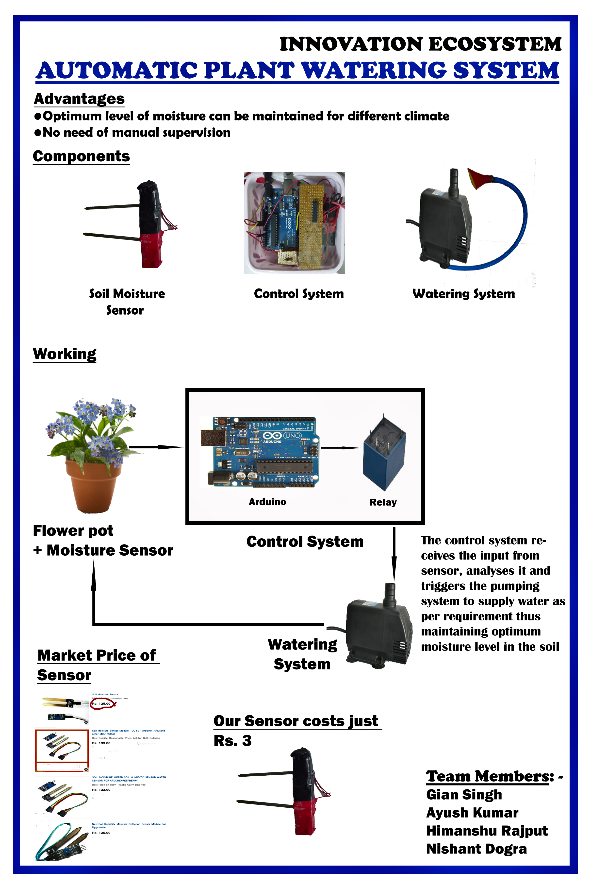

04 2015
Automatic Plant Watering and Irrigation System

With agriculture contributing 13.7% to the national GDP and about 49% of INDIA’s population working in the agriculture sector, INDIA cannot afford to take agricultural production lightly. Still Indian farmers are dependent on natural rains for irrigating their lands, which are fairly erratic and hence does not help the INDIA’s cause. The existing irrigation systems, utilizing electrical motors and tube wells are not efficient. They cause a lot of water and electricity wastage and excess of water may damage the crop. The world is already facing the water crisis and electricity production in INDIA is not enough to meet the ever increasing demands. Agriculture sector alone consumes around 28.2% of total electricity produced in India. Hence, there is an urgent need to improve our irrigation system.
One way to increase efficiency of a system is to automatize it. The AUTOMATIC PLANT WATERING and IRRIGATION SYSTEM is a solution the problem. At an estimated cost of 1000 INR, this is a cost efficient and a smart way to irrigate our lands and water our plants in the garden. Automatic systems are convenient, especially for those who travel. If installed and programmed properly, automatic irrigation systems can even save you money and help in water conservation. Dead lawn grass and plants need to be replaced, and that can be expensive. Watering the plants with a hose or with sprinkler wastes water. Neither method targets plant roots with any significant degree of precision. Automatic irrigation systems can be programmed to discharge more precise amounts of water on a targeted area, which helps in water conservation.
So as per their needs we designed and fabricated a solar food dryer for them which can meet the requirements of both industries and cottage workers. It is a small endeavor to help them. It uses a small electric power for the pump and air blower which have very small power requirement of 211W and it can be easily supplied with an inverter in case of power cuts. Moreover it is not open to atmosphere and direct radiations as food products are kept inside the drying chamber thus no question of contamination or any other quality loss. Thus our solar dryer is able to serve the purpose of both industrialists as well as local people successfully.
ADVANTAGES THIS SYTEM :
1. Saves water - Studies show that automatic drip irrigation systems use 30 - 50% less water than conventional watering methods, such as sprinklers.
2. Improves growth - Smaller amounts of water applied over a longer amount of time provide ideal growing conditions. Drip irrigation extends watering times for plants, and prevents soil erosion and nutrient runoff. Also, because the flow is continuous, water penetrates deeply into the soil to get well down into the root zone.
3. Discourages weeds - Water is only delivered where it's needed.
4. Saves time - Setting and moving sprinklers is not required. A timer delay as per environment can be added to the system for automatic watering.
5. Helps control fungal diseases, which grow quickly under moist conditions. Also, wet foliage can spread disease.
6. Adaptable - A drip irrigation system can be modified easily to adjust to the changing needs of a garden or lawn.
7. Simplest Method - Start by drawing a map of your garden and yard, showing the location of plantings. Measure the distances required for lengths of hose or plastic tubing to reach the desired areas.